Переход от ручного контроля
к цифровому управлению


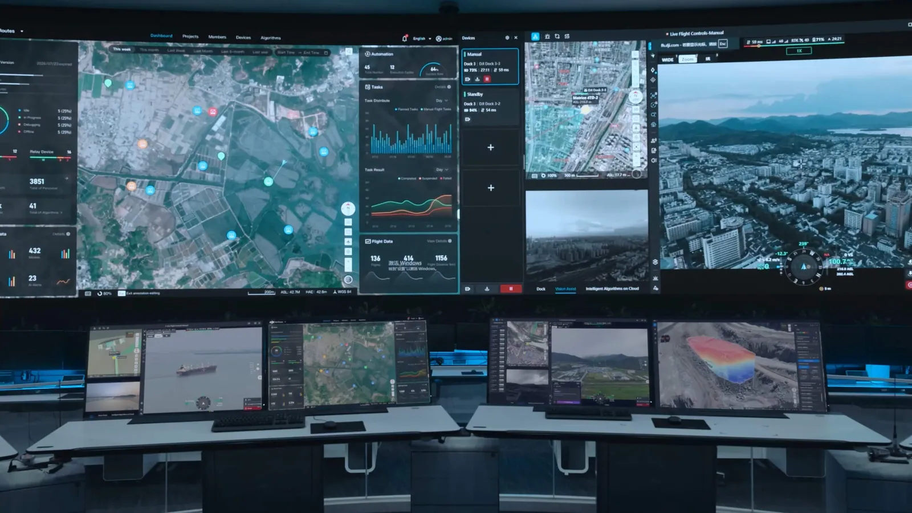
Единый цифровой контур для всей инфраструктуры
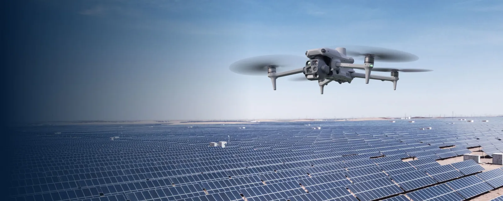
Солнечные станции
Предотвращение потерь генерации
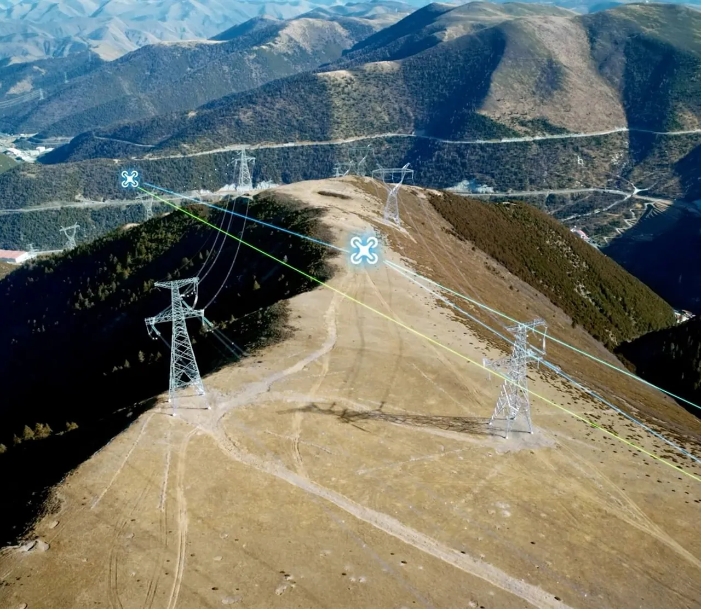
Инспекция ЛЭП
Стабильность электросети
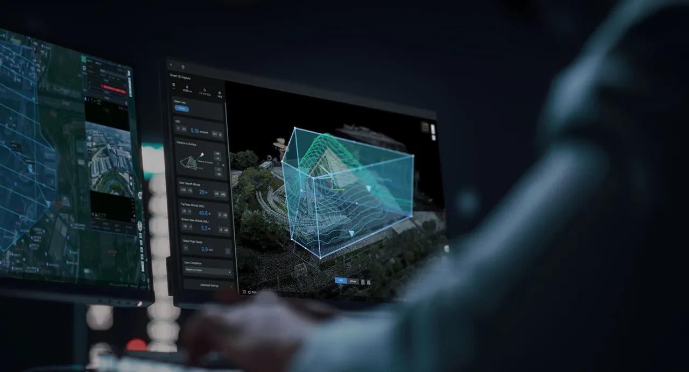
Умный город
Безопасность городской среды

Дороги
Аналитика состояния покрытий
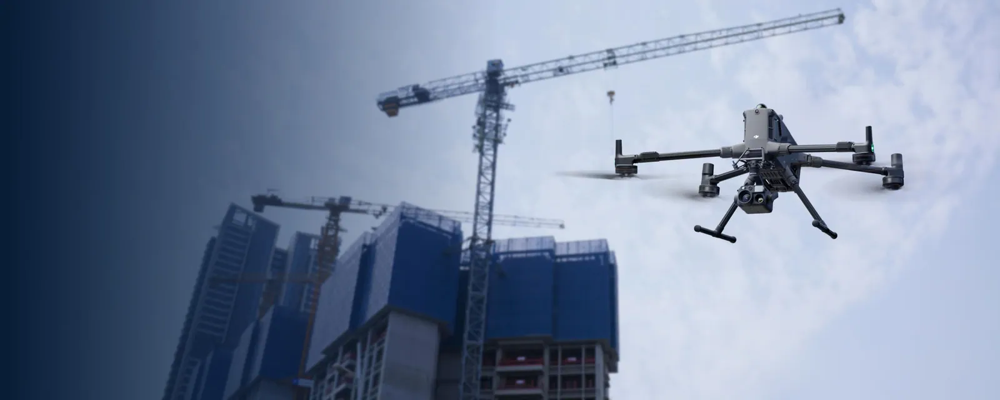
Строительство
BIM-контроль и прогресс работ

Сельское хозяйство
Точное земледелие и автопилот
AI-инспекция солнечных станций
60% станций теряют до 15% генерации из-за скрытых дефектов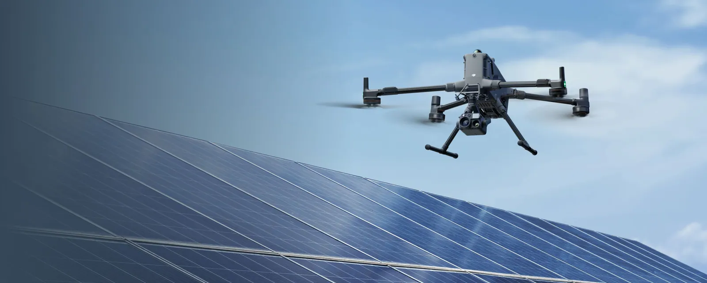
SCAN: 100 HA/DAY

Интеллектуальная инспекция ЛЭП
Точность распознавания AI-моделей — до 90%+
DEFECTS: AUTO
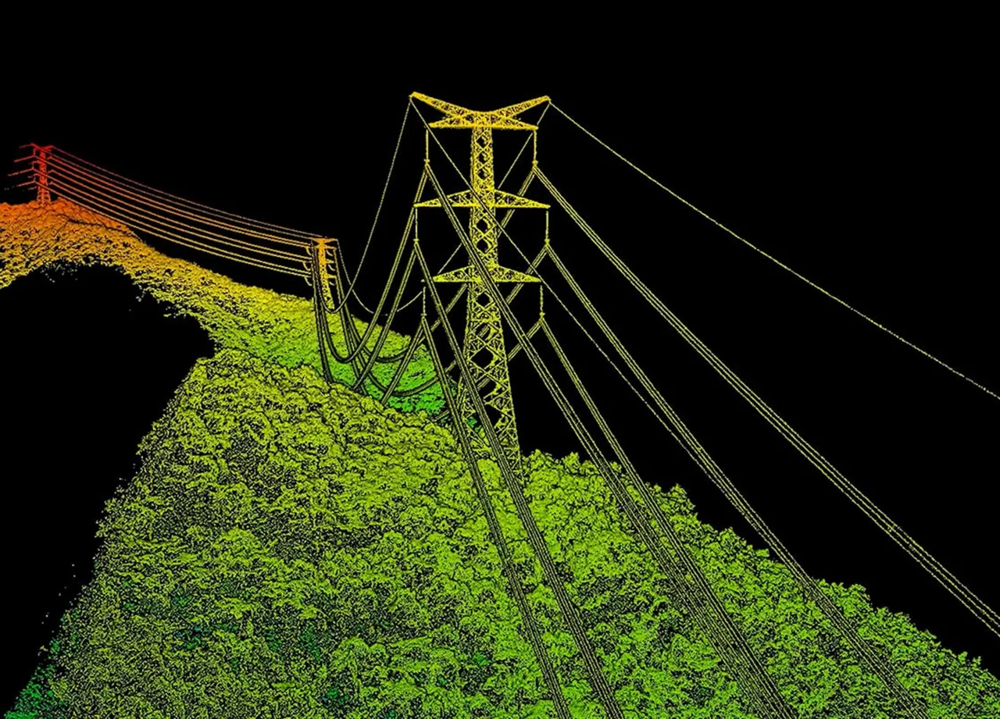
AI-аналитика дорожной сети
Переход от долгих ручных проверок к интерактивной карте дефектов покрытия.

CRACK: 0.94
Автопилот для сельхозтехники
NX610 — автоматизированная система управления техникой для точного земледелия: снижает влияние человеческого фактора и повышает эффективность полевых работ.
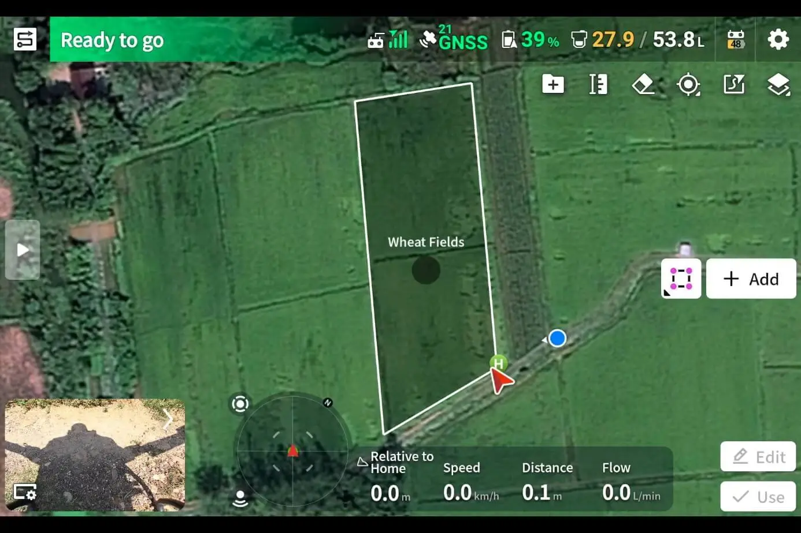

Единая экосистема Smart Farming
Комплексное решение для цифровизации сельского хозяйства: интеграция дрон-сервиса и наземной техники.


Автоматизированная доставка БПЛА
Интеллектуальная платформа для автономной логистики и управления парком дронов.

MISSION: AUTO
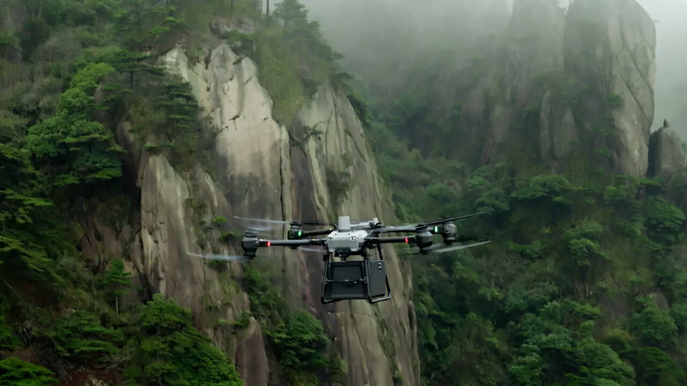
Доставка товаров последней мили
Городская логистика без влияния дорожного трафика.

Заказ
Центр обработки
UAV + Route Planning
Клиент
Промышленная и специализированная доставка
Интеграция Payload Management для сложных и критически важных объектов.
Строительство
- Строительные материалы и инструмент
- Оборудование и комплектующие
- Средства индивидуальной защиты
Здравоохранение
- Медикаменты и препараты крови
- Лабораторные образцы
- Компактное медицинское оборудование
Промышленность
- Оснащение удалённых объектов
- Аварийные материалы и запчасти
- Специализированное оборудование
Государственные службы
- Аварийно-спасательное оборудование
- Гуманитарные грузы
- Обеспечение труднодоступных территорий

MODE: BVLOS
Эффект от внедрения логистики
Трансформация операционной модели и масштабирование парка.

MISSIONS: 2 340
Затрат
Снижение O&M за счёт отказа от наземного транспорта и ручного труда.
Скорость
Ускорение логистических цепочек против традиционной доставки.
Безопасность
Отсутствие рисков для персонала на маршруте.
Точность
Безошибочное распределение миссий алгоритмами AI Dispatch.
Цифровой контроль строительства
Интеграция с BIM/CAD против ошибок данных и задержек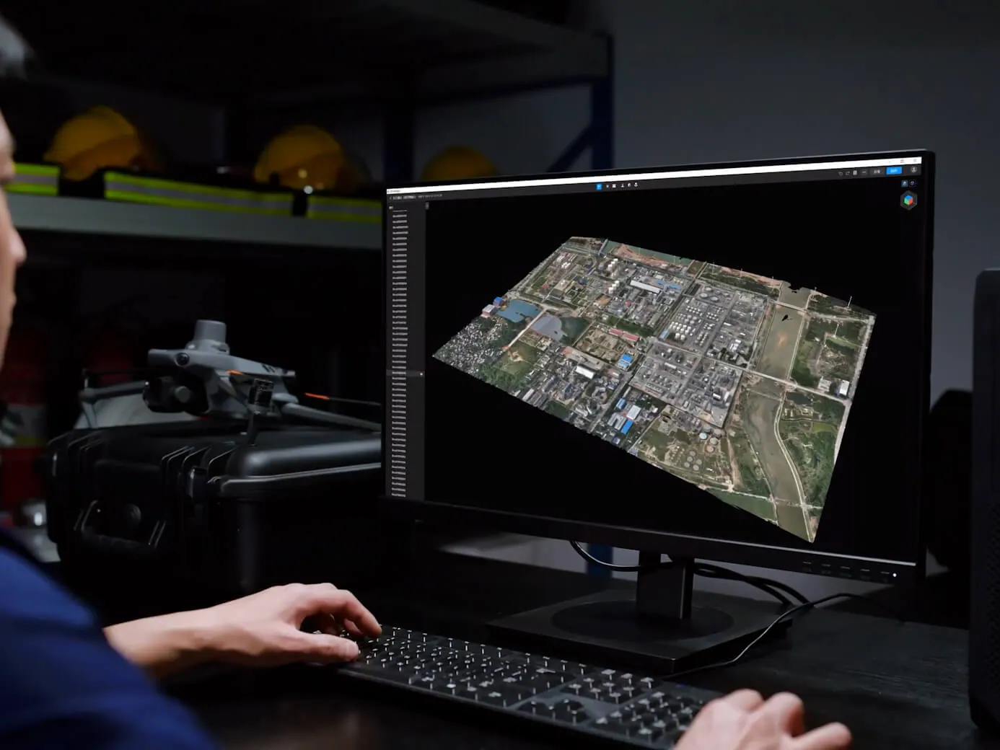
BIM-READY

Умная аналитика: выявление угроз и классификация
До 80% элементов сети платформа классифицирует полностью автоматически. Алгоритмы не просто собирают фото — они сами находят угрозы в сложных условиях освещения и геометрии.
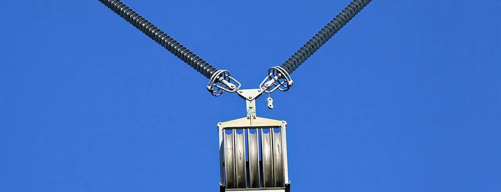
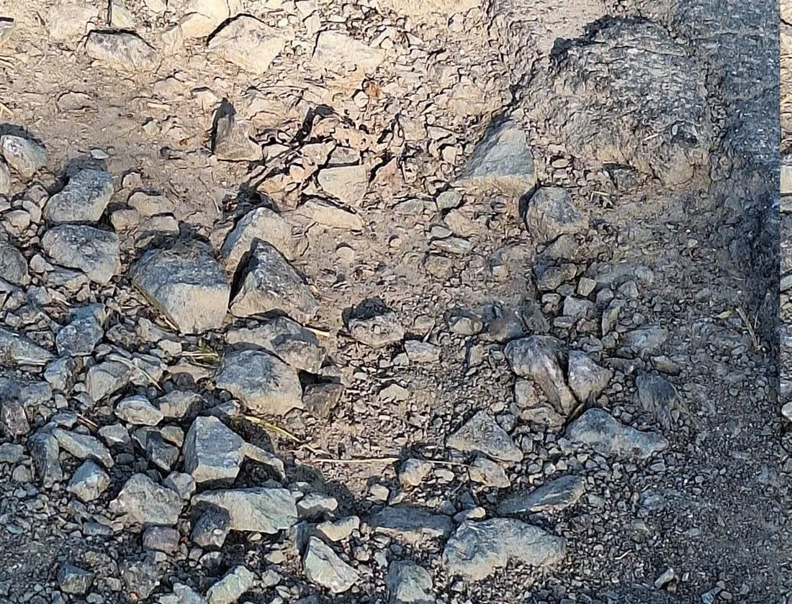

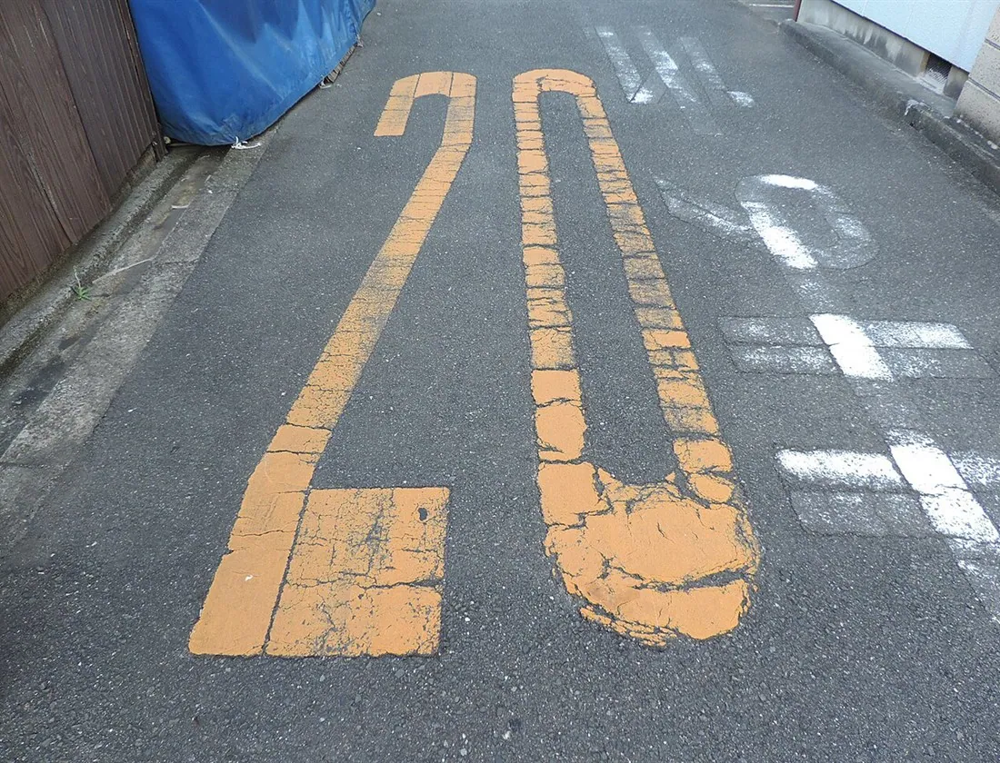
Масштабируемость: от пилота до всей сети
Платформа уже работает на сотнях объектов: начните с пилота на одном участке и разверните её на всю сеть без смены инструментов.

CONTROL: CENTRAL